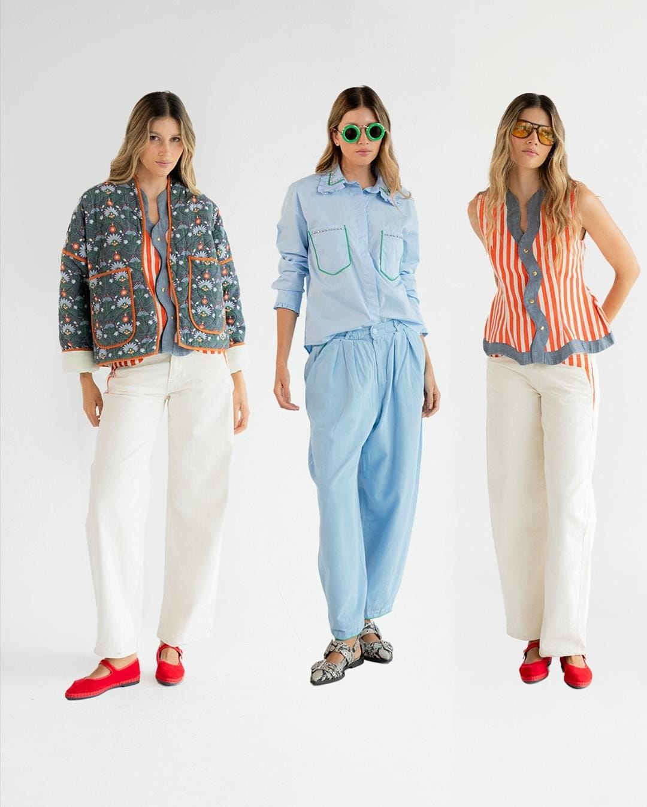
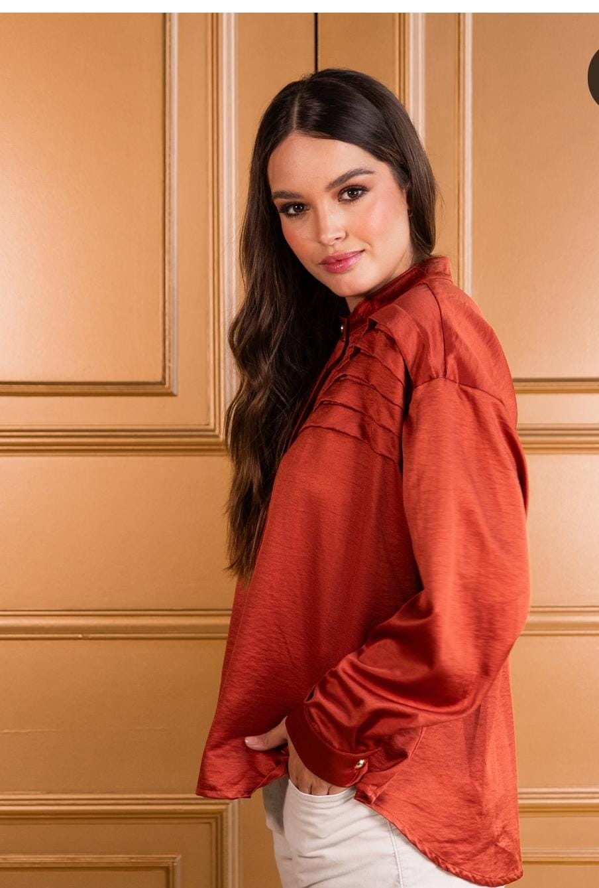
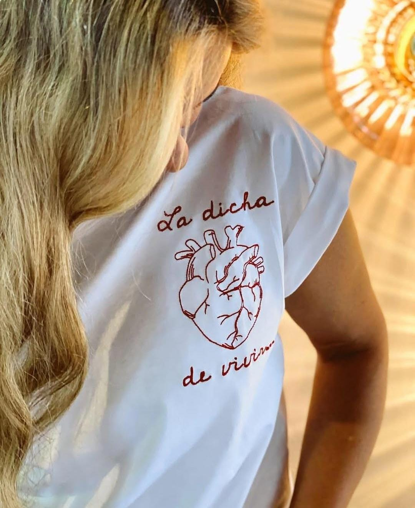
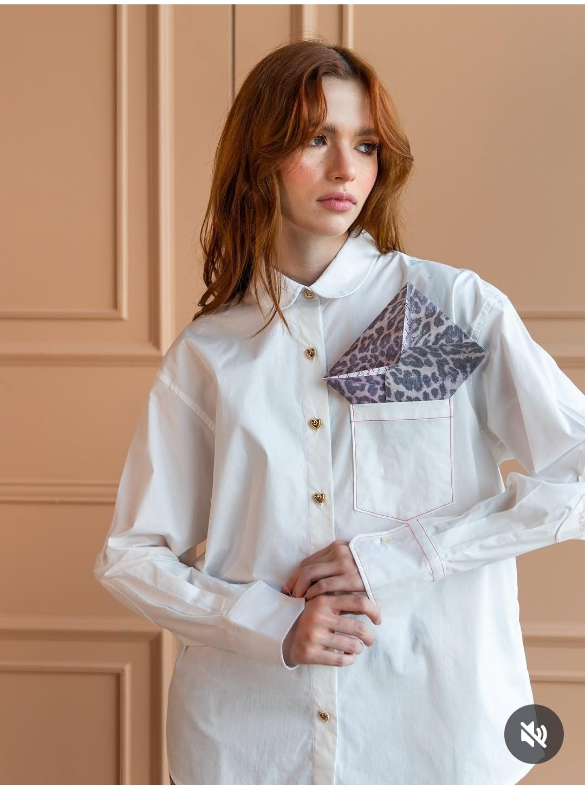
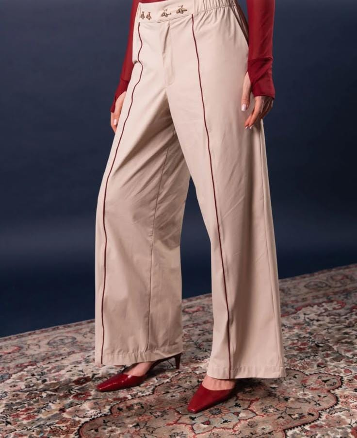
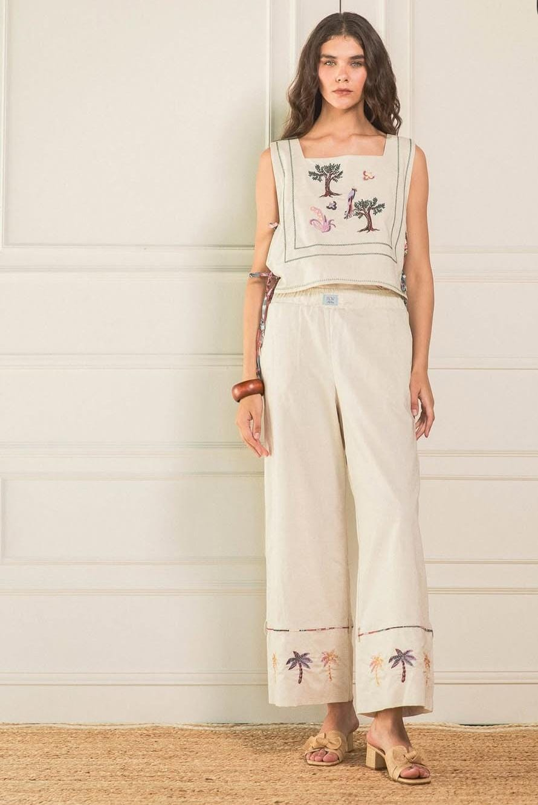
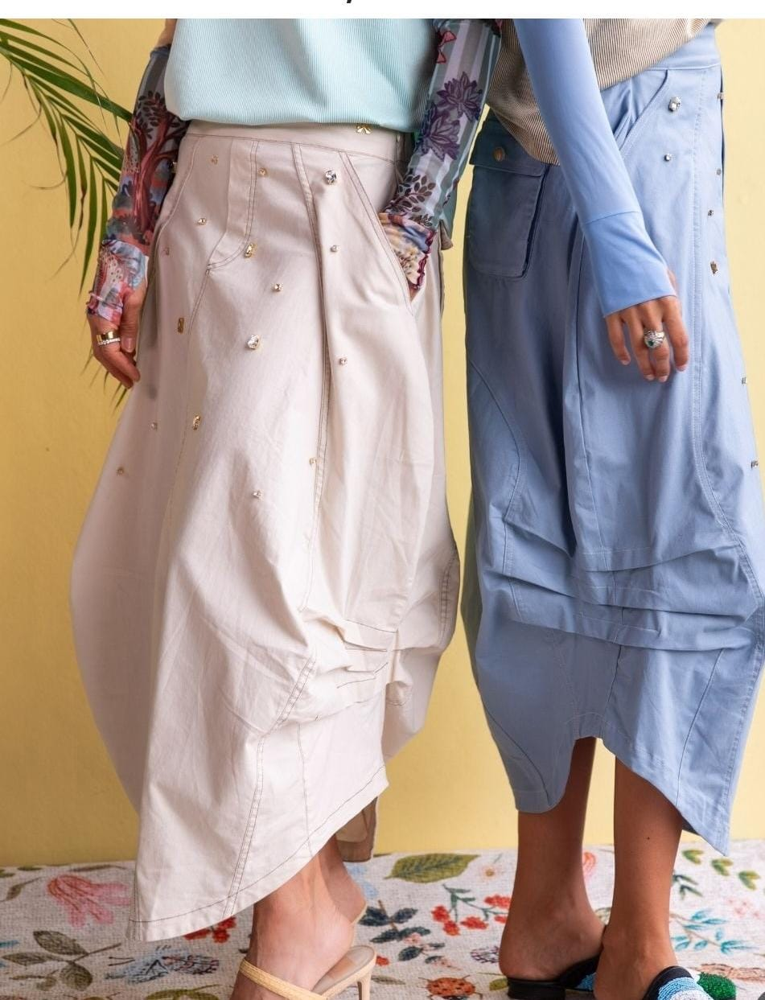
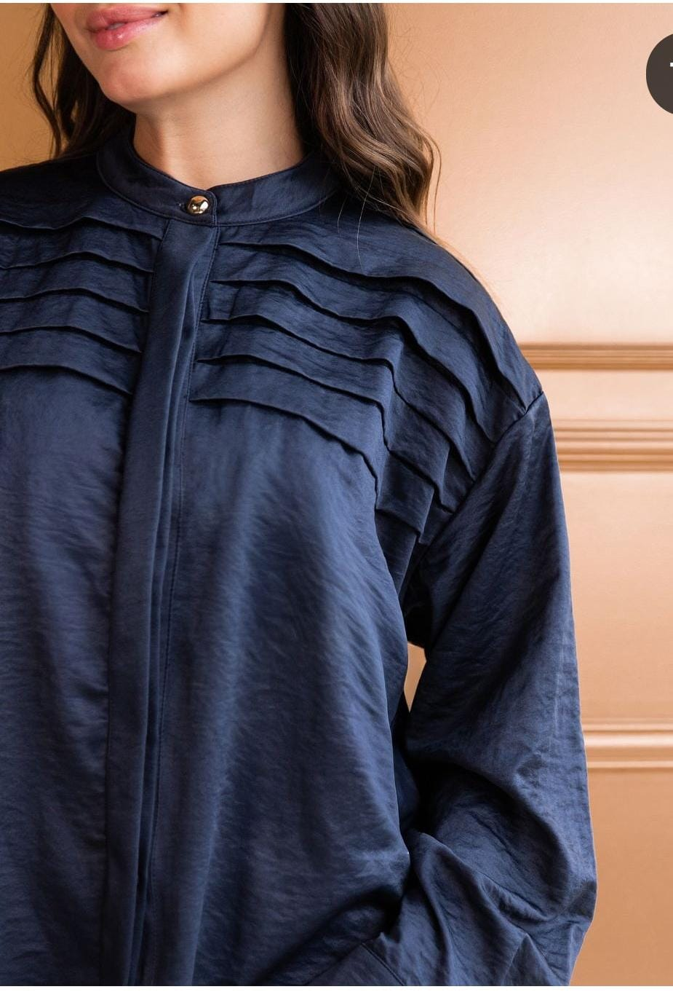
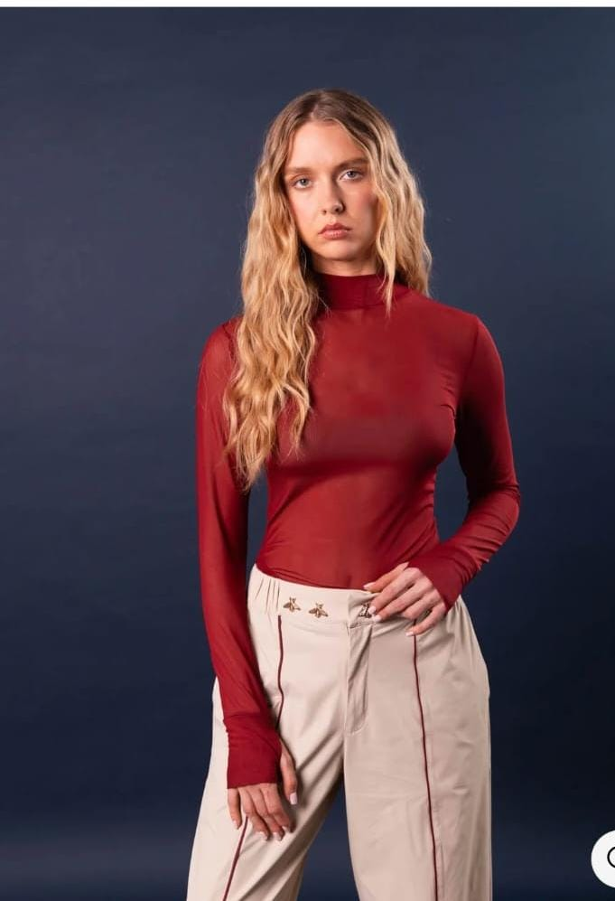

Conocemos tu idea
Conversamos sobre el diseño, el uso de la prenda y las especificaciones que quieres lograr.
En LyB Moda acompañamos cada proyecto de confección desde la conversación inicial hasta los detalles finales. La elección de la tela, la aprobación de la muestra y los ajustes se trabajan contigo en cada etapa.
Escuchamos tus necesidades y definimos contigo el camino para desarrollar cada prenda.
Conversamos sobre el diseño, el uso de la prenda y las especificaciones que quieres lograr.
Presentamos opciones para que revises y apruebes la tela, el color y los materiales del proyecto.
Preparamos una muestra o contramuestra para que valides el diseño y solicites los ajustes necesarios.
Con la aprobación acordada, avanzamos en la producción cuidando los detalles definidos contigo.
Verificamos los acabados y coordinamos la entrega según las condiciones acordadas para el proyecto.
La tela, las especificaciones y los cambios que necesites se conversan contigo. Revisamos cada ajuste y avanzamos de acuerdo con tus aprobaciones.
Los videos reúnen distintas etapas del proyecto: desde la elección de la tela y las aprobaciones del cliente hasta la prenda terminada y lista para entregar.
Una selección de prendas desarrolladas y confeccionadas para distintos proyectos.
Estas prendas muestran el resultado final de proyectos de confección. En la sección anterior puedes ver el proceso que lleva cada proyecto hasta su entrega.









Cuéntanos qué quieres confeccionar y conversemos sobre el proceso.